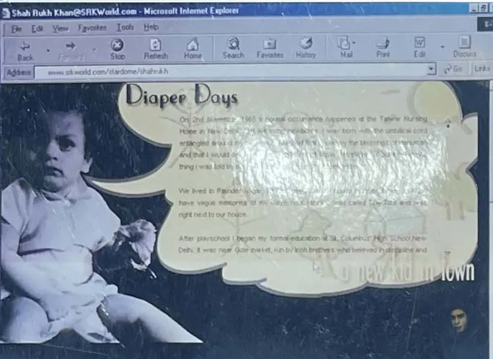

Part I · The Origin of the King, 1965 to 1999 · 3 of 57
Chapter 1 · Diaper Days: the boy in the wings, 1946 to 1975
How a boy from Delhi, with no film family and no money, reached the whole country through one television channel and became the romantic hero of a nation that was just learning to buy things. Facts in this Part are from Wikipedia: Shah Rukh Khan unless another source is named.
[image: SRKWorld.com, 2000: Diaper Days]

SRKWorld.com, 2000: “Diaper Days”. (Archive: the author’s collection)
The story starts a year before India does. In 1946 a young man from Peshawar, Mir Taj Mohammed Khan, came to Delhi to study law. He was about nineteen and had already been to jail: arrested during the Quit India movement of 1942, he was in and out of prison for the next two years. He had campaigned with the Khudai Khidmatgar, the non-violent movement of Abdul Ghaffar Khan, the “Frontier Gandhi”. (Fact. Alt News, 29 Oct 2021, citing his gravestone, which gives his birth as 27 October 1927, and the biographies King of Bollywood and Shahrukh Khan: The Story of the Man*)* Partition came the next year. Peshawar went to Pakistan. He stayed in Delhi. (Fact)
Hold on to that inheritance. The son of a man who went to prison for non-violent resistance will, seventy-five years later, stand at his own gate in silence. (Analysis)
The ballot of 1957. The election archive IndiaVotes lists three candidates for the Gurgaon seat in the 1957 Lok Sabha election: Maulana Abul Kalam Azad of the Congress, who won with 191,221 votes; Mool Chand of the Bharatiya Jana Sangh, with 95,553; and an independent named Taj Mohammad, for whom it records no votes. (Fact. IndiaVotes: Gurgaon, 1957) Several reports identify that independent as Shah Rukh Khan’s father. (Fact. NewsBytes) [Unverified] that the Taj Mohammad on the ballot is Mir Taj Mohammed Khan, and his true vote count; the Election Commission’s statistical report for 1957 would settle both. If the reports are right, a Peshawar-born lawyer of about thirty, with no party behind him, put his name on the same ballot as India’s first education minister. (Analysis)
Two families. In 1959 he married Lateef Fatima, a magistrate and the daughter of Iftikhar Ahmed, chief engineer of the port at Mangalore. Their daughter, Shahnaz Lalarukh, was born in 1960. Their son was born in New Delhi on 2 November 1965, six weeks after the ceasefire that ended India’s second war with Pakistan, and spent his first five years on the Karnataka coast, at his grandfather’s. (Fact) He has described himself as Hyderabadi on his mother’s side, half Pathan on his father’s and partly Kashmiri through his grandmother; his father’s cousins in Peshawar say the family speaks Hindko and came from Kashmir. The accounts do not fully agree, and this book prints them side by side. (Fact) What they share is the shape of the man: a north-western father, a southern mother, a Delhi childhood and, later, a Mumbai career. He would sell that shape to the whole country as an idea of India. (Analysis)
The boy in the wings. The father did not practise law for long. He ran several businesses, including a restaurant, and the family lived in rented flats in Rajendra Nagar. (Fact) A 2026 report names the restaurant as Khatir and says the father also ran the mess at the National School of Drama. (Fact. The Siasat Daily, 22 June 2026) [Unverified] the restaurant’s name and the NSD contract, which need an NSD record or a family statement. The son has said he went to the drama school every day after school, waiting for his sister, and grew up among its actors. The actor Pankaj Kapur, a student there in the mid-1970s, remembers a boy of about ten carrying samosas to the actors at the interval. The boy was Shah Rukh Khan. (Fact. Times of India interview, 2014, and Pankaj Kapur on Kindle Cast, both as reported by The Siasat Daily)
Before he ever saw a film set, he grew up at the back of India’s national drama school, serving the people on stage. The boy who carried food in the interval became the man whom crowds wait for at his gate. (Analysis)
His own word for it. In 2000 he gave his childhood a room on his own website and called it Diaper Days: a baby photograph and a first-person account of a Delhi birth. The title is his joke. (Recollection; archive: SRKWorld screen photographs, 2000)